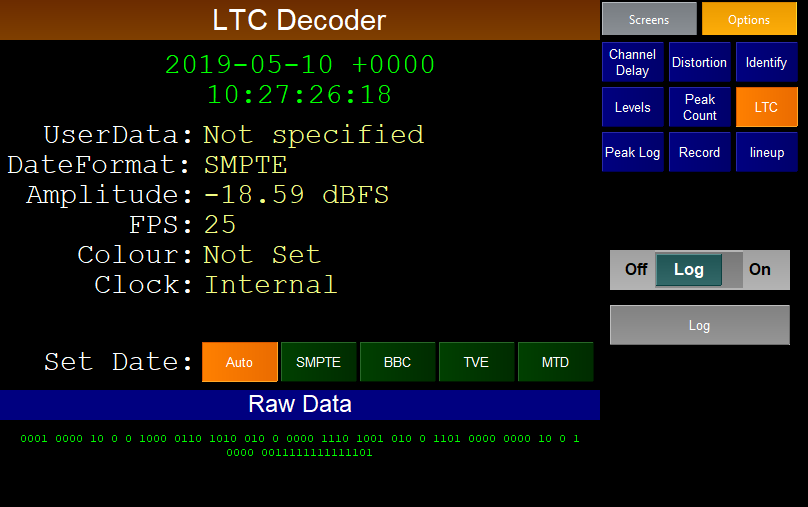

The LTC test plugin can be used to decode linear time code audio.
There are a number of different formats of LTC. The user can select which one the plugin should attempt to decode from the "Set Date" list or choose "Auto" to allow the plugin to attempt to decide for itself.
The plugin decodes and displays the LTC time, UserData, flavour of LTC, incoming audio level, Frames Per Sec, Colour and Clock. At the bottom of the screen is the raw data in 1s and 0s.
The plugin uses libltc